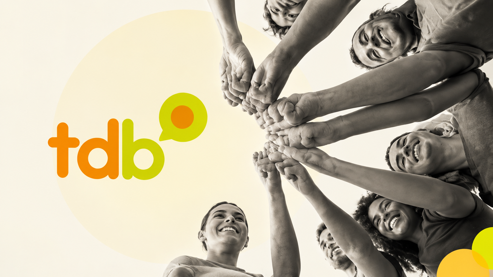
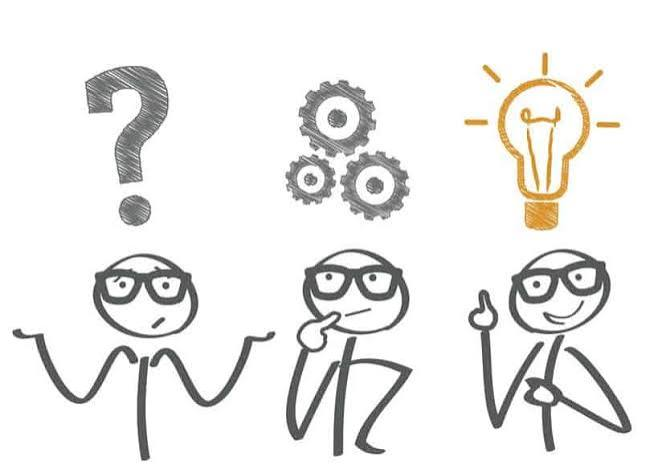

Sobre o Projeto
Identificamos desafios na captação de recursos e na comunicação com doadores. Nosso projeto busca usar a tecnologia para facilitar essa conexão.


Identificamos desafios na captação de recursos e na comunicação com doadores. Nosso projeto busca usar a tecnologia para facilitar essa conexão.

Uma plataforma que conecta doadores, organizações e beneficiários. A proposta é centralizar informações, doações e acompanhamento em um só lugar.

Queremos tornar as doações mais acessíveis e transparentes. Assim, buscamos ampliar o alcance das iniciativas e fortalecer seu impacto social.